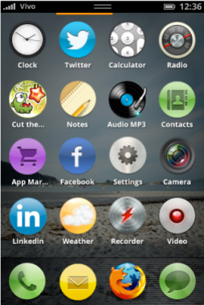
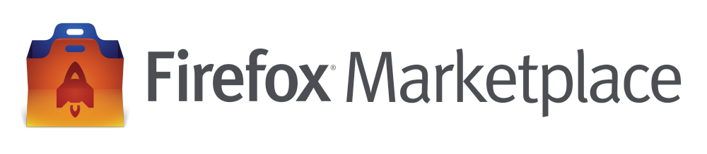
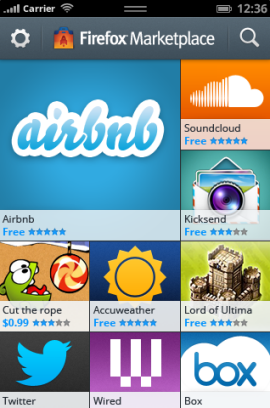
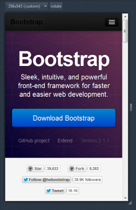

Web apps are apps built using standard Web technologies.
They work in any modern Web browser, and can be developed using your favorite tools.
The apps project
The Open Web apps project proposes some small additions to existing sites
to turn them into apps that run in a rich, fun, and powerfull computing environment.
The apps project

These apps run on desktop browsers and mobile devices,
and are easier for a user to discover and launch than Web sites.

Firefox Marketplace

An initiative to bring App experiences
- built using HTML5 standards and open technologies (HTML, CSS & JS) -
across all your devices
Design

Learn how to design Web Apps that provide
a user experience optimized for Firefox OS & Mobile
Responsive web design for adapting to varying resolutions
and screen orientation


 Photo by Michael Gil
Photo by Michael Gil

 Photo by Doug Geisler
Photo by Doug Geisler